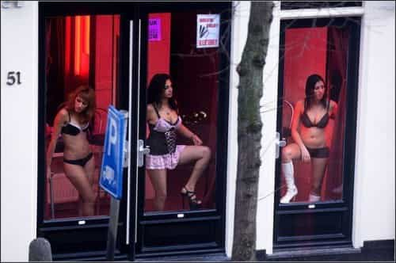

Robert Ossenblok is a rational man. He loves Europe, dislikes big government, and enjoys history. In order to improve people's knowledge about Europe, he founded the Clovis Institute. You can also find them on Facebook, or follow them on Twitter.


I was born and raised in the Netherlands. Although I did not live in Amsterdam, I was well aware of how the city looked thanks to the television. One show in particular, Baantjer, was about two detectives solving crimes in the heart of Amsterdam. Every episode would show them walking through the red-light district.
Keep in mind, this was a family show that I watched before my age even reached the double digits. Initially, I had no idea why there were women wearing lingerie standing behind large windows with a red light above their head. What I did know was that it was perfectly normal.
As a young boy I would visit Amsterdam, both with my parents as well as on a school excursion. In both instances, we had a walk through the red light district. After all, this was a normal aspect of the Amsterdam touristic route.
As I grew up, I found it odd that other countries did not have similar districts. Since the Netherlands is known to be such a progressive country, surely having streets full of prostitutes is a progressive virtue?

Virtuous. That is exactly how the Dutch perceive their streets full of whores. Excuse me, their streets full of prostitutes. Using a slightly fancier term makes the act of selling the use of your body sound more sophisticated and progressive. Women had acquired the right to vote. Women had acquired the ability to work. And now, women had acquired the freedom to sell sex.
Prostitution really is the culmination of female empowerment. It shows women have taken back their rights, they own their bodies! And as owners, they can sell access to their bodies. Glorious individual liberty, the ultimate combination between freedom and women’s rights. It allowed women to be free from men’s shackles, to earn their own income in the way they wanted. Is it moral? Of course, it’s their body, their choice. You can’t argue with that logic, not without being called a misogynist.
Even the more conservative Dutch do not want to end prostitution. The argument is that it will happen anyway, so it is better to have it happening out in the open. The more visible it is, the more implied (or imagined) safety is present.
The idea, or maybe we should call it a myth, is that liberated, empowered women choose to earn their income by selling sex. Strong, empowered women, confident in their sexuality. If they like sex, it is really them taking advantage of the men, isn’t it? After all, they are receiving fairly large sums of money for it.
Yet, what do we see when we walk through the red-light district? The women are not Dutch. Most by far are from Eastern European countries. Poland, Romania, the Ukraine, Hungary, etc. They come from countries that are poor.
They are lured by a brighter future, a future with a comfortable life, a future that is better than they can get in their home countries. But, despite possibly being reluctant at the start, that future involves becoming a prostitute. Not quite their first choice of a career, nor the second. The money is simply too appealing.
These girls did not dream of ‘making easy money by selling sex’. They are not liberated. They’re not empowered. They are girls that are openly being taken advantage of. Prostitutes are the weak, the used, the desperate!
These are the same types of women that have always been driven to prostitution. How can we look at them and not realize that their smiles are fake? How can we believe they are happy standing in front of a window in lingerie, trying to lure men in?
Now, there will be those reading this that are not convinced. You will think that this is exaggerated. You may think it is true for some of the girls, but definitely not for all of them.
Well, have a look at the type of men they receive. The losers, the fat ones, the bald ones. Even porn-actresses have sex with fewer, and generally better-looking men than the scum that enters the rooms of the whores in Amsterdam. Maybe the prostitute will reject some, but if you want to earn an income as a prostitute your standards cannot be very high.
Of course there is the money. Yes, most women in Amsterdam are not forced. They do it voluntarily. And they do it for the money. But does that make it virtuous?
Should we consider women degrading themselves, performing a job they were reluctant to accept, as something progressive? Is this something we should be proud of? Amsterdam is a hub for poor former-Soviet women to sell their bodies, so that the sex tourists from wealthy countries can use them to their liking. What kind of future will the ‘progressives’ lead us towards, if that is their idea of a virtuous, proud, society?
Read More: Why Western Governments Promote Women’s Liberation